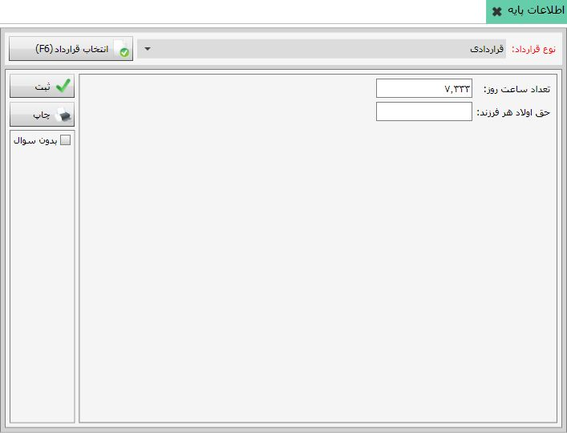

پس از آنکه نوع عملکرد پارامتری را که تعریف کرده اید از نوع پایه قرار دادید در این منو می توانید پارامتر مورد نظر مقدار دهی کنید. شکل زیر این منو را نشان می دهد:
برای مقدار دهی پارامتر ابتدا باید از سربرگ صفحه ی بالا نوع قرارداد را انتخاب کرده و سپس با استفاده از دکمه پارامترهایی را که در قرارداد انتخابی عملکرد ان ها از نوع پایه تعریف کرده اید را برای مقداردهی نشان میدهد.پس از مقدار دهی پارامتر ها با استفاده از دکمه مقادیر را ثبت کنید.
با استفاده از دکمه پرینت میتوانید پارامترهایی را که مقدار دهی کرده اید را پرینت بگیرید.